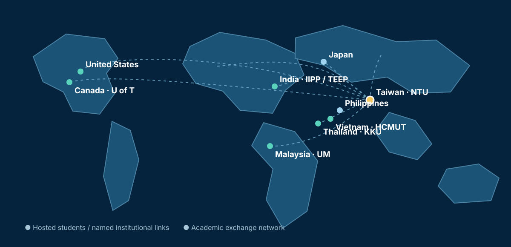

INTERNATIONAL LEARNING
GLOBAL CONNECTIONS

Thailand · KKU
Vietnam · HCMUT
Malaysia · Universiti Malaya
Philippines · academic exchange
Japan · academic exchange
United States · UT Austin
Canada · University of Toronto
India · IIPP / TEEP
Mongolia · MUST